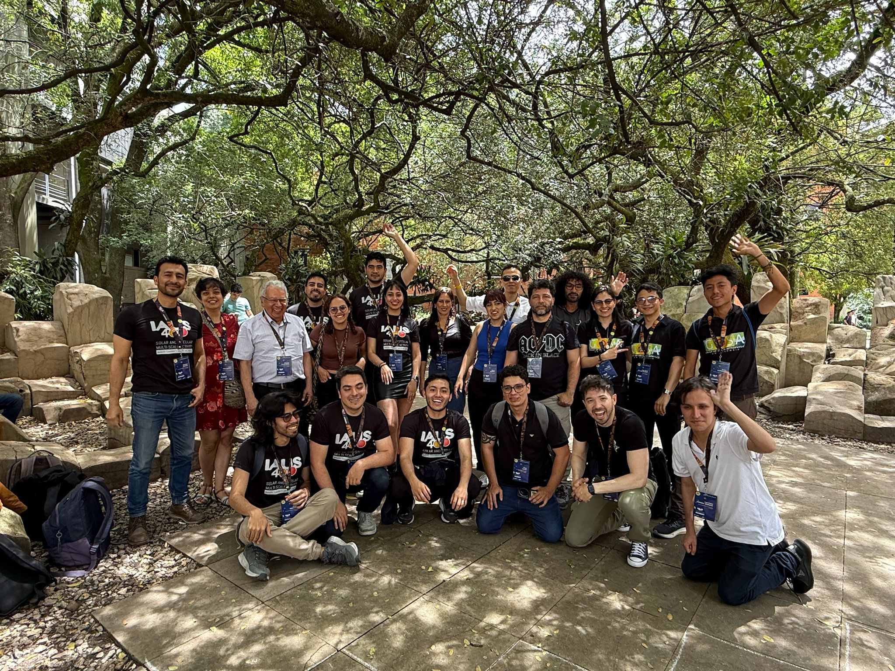
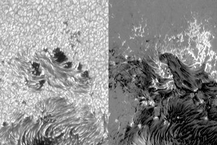
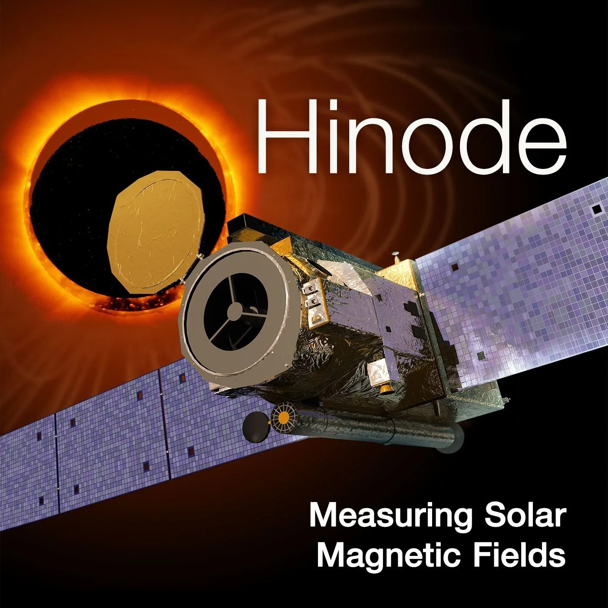
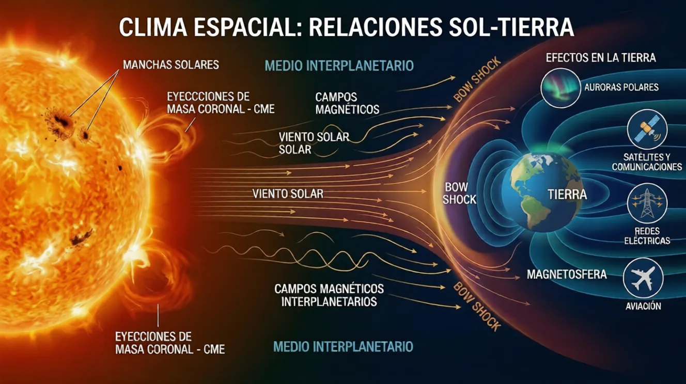
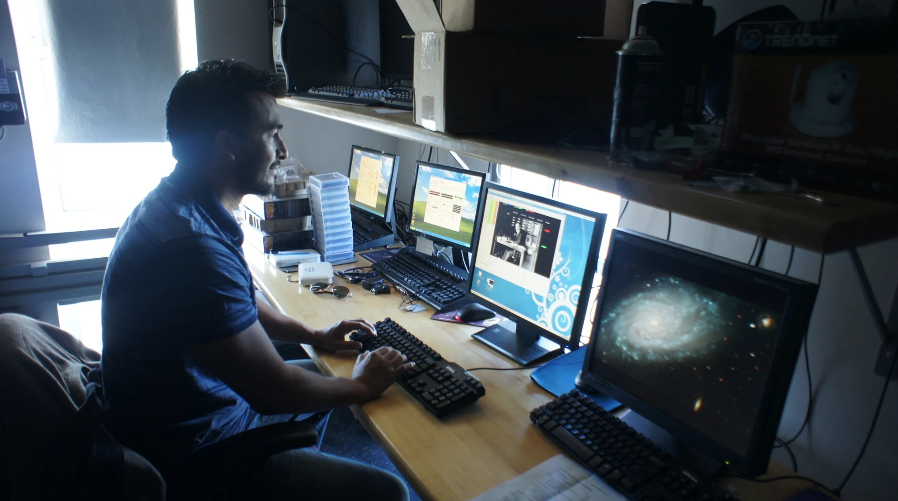

01
Magnetismo y dinámica solar
Emergencia de flujo magnético, puntos brillantes, poros solares y movimientos del plasma en la fotosfera y la atmósfera solar.
INVESTIGACIÓN
La dinámica del plasma y los campos magnéticos conecta los pequeños detalles de la superficie solar con los grandes fenómenos de su atmósfera.

INVESTIGACIÓN Y FORMACIÓN EN COLOMBIA
Una comunidad para comprender nuestra estrella.
Lidero el Grupo de Astrofísica Solar (GoSA) del Observatorio Astronómico Nacional, Universidad Nacional de Colombia. Integramos investigación, formación de estudiantes y colaboración internacional para estudiar el magnetismo, la dinámica y la actividad del Sol.
Conocer GoSA, su equipo y sus proyectos ↗
LÍNEAS DE TRABAJO
Emergencia de flujo magnético, puntos brillantes, poros solares y movimientos del plasma en la fotosfera y la atmósfera solar.
Fulguraciones, reconexión magnética y conexiones entre la actividad del Sol y el entorno terrestre.
Procesamiento y restauración de imágenes, caracterización de aberraciones ópticas y aplicación de aprendizaje profundo al análisis de datos solares.
Observación de la Tierra, contaminación lumínica y relaciones entre actividad solar, atmósferas planetarias y condiciones ambientales.
PROYECTOS Y COLABORACIONES

Imagen solar del equipo Sunrise · MPS
Sunrise / IMaX
Trabajo doctoral en calidad de imagen, aberraciones ópticas y restauración de imágenes dentro del proyecto Sunrise.
Más información ↗
Imagen de la misión Hinode · NASA
Hinode / EIS
Coordinación de observaciones con el espectrómetro EIS y análisis de datos solares durante mi trabajo en UCL–MSSL.
Más información ↗
Imagen alusiva al clima espacial · GoSA
DynaSun
GoSA participa en esta red internacional dedicada a la dinámica de la corona solar, el intercambio de investigadores y el análisis de observaciones intensivas en datos.
Más información ↗
Formación científica · archivo personal
Beyond Research
Acompañamiento a proyectos de estudiantes en un programa de internacionalización que conecta investigadores de la UNAL y del exterior.
Más información ↗PUBLICACIONES CIENTÍFICAS
Consulta mis artículos, colaboraciones y referencias bibliográficas en Google Scholar, ordenados por fecha de publicación.
Acceder a todas mis publicaciones en Google Scholar ↗
PUBLICACIONES SELECCIONADAS
Una selección de trabajos sobre física solar, clima espacial y patrimonio científico.
S. Vargas-Domínguez, J. A. Agudelo-Rueda, J. C. Buitrago-Casas y colaboradores. Revista de la Academia Colombiana de Ciencias Exactas, Físicas y Naturales.
S. Vargas-Domínguez, G. D. Álvarez-Lucero, M. A. Higuera-Garzón y colaboradores. Revista de la Academia Colombiana de Ciencias Exactas, Físicas y Naturales.
L. Harra y colaboradores, con S. Vargas Domínguez. Astronomy & Astrophysics.
Journal of Plasma Physics. Consultar publicación ↗
PRODUCCIÓN CIENTÍFICA Y EDITORIAL
Indicadores bibliométricos consignados en el CV, con corte en agosto de 2026. Los libros corresponden a la selección editorial de esta web. No se actualizan automáticamente.
El catálogo completo de publicaciones y las cifras más recientes pueden consultarse en mi perfil de Google Scholar.
Abrir el catálogo completo ↗